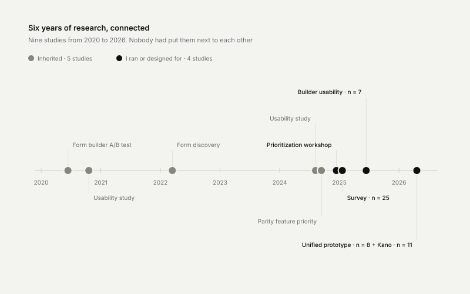
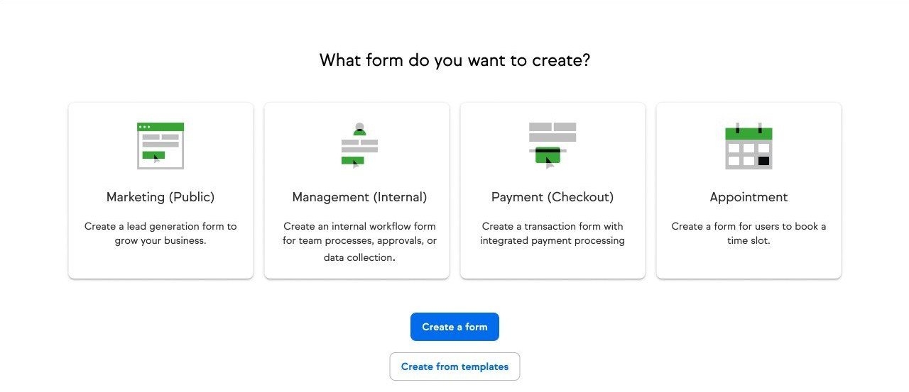
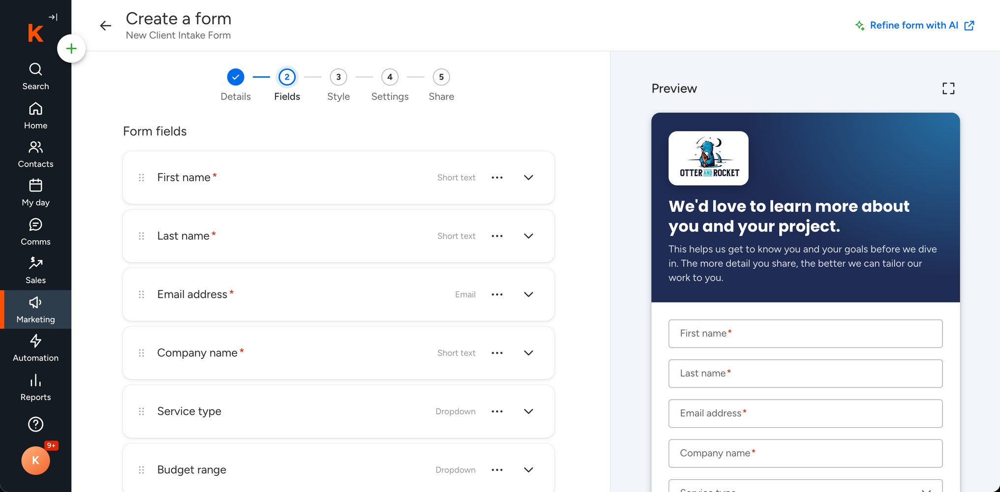
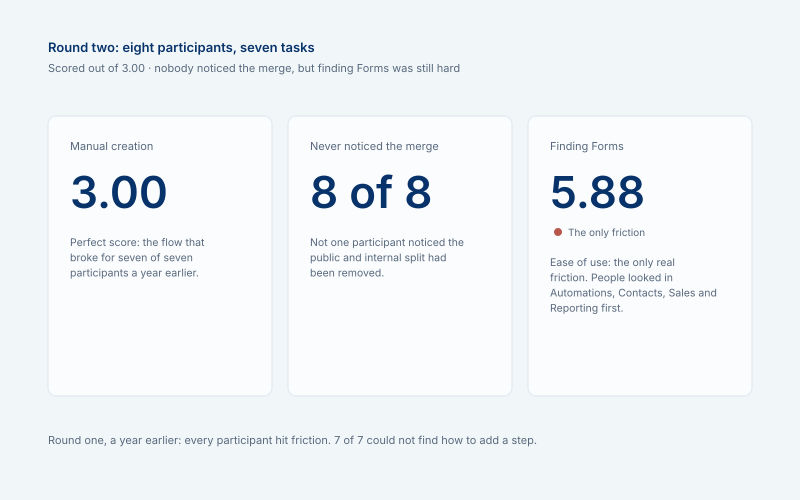
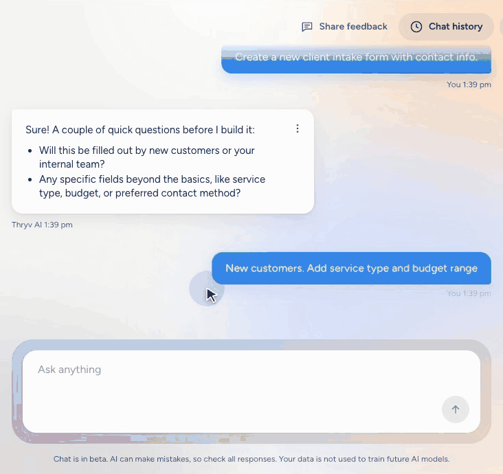
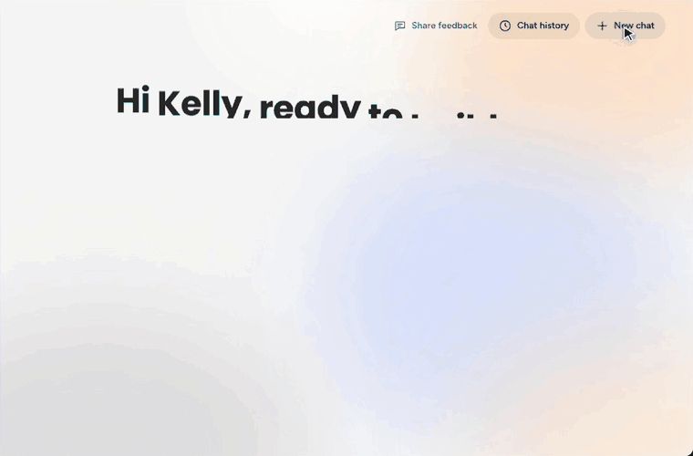
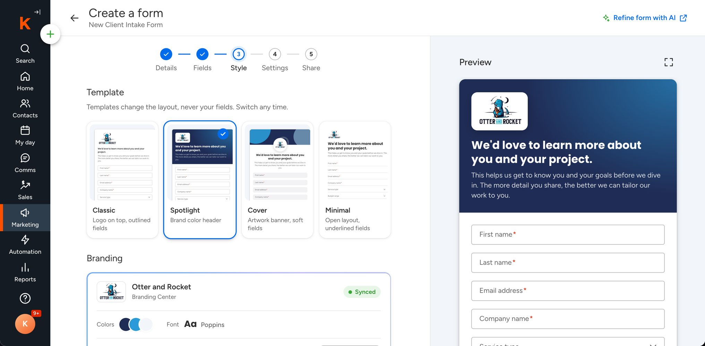
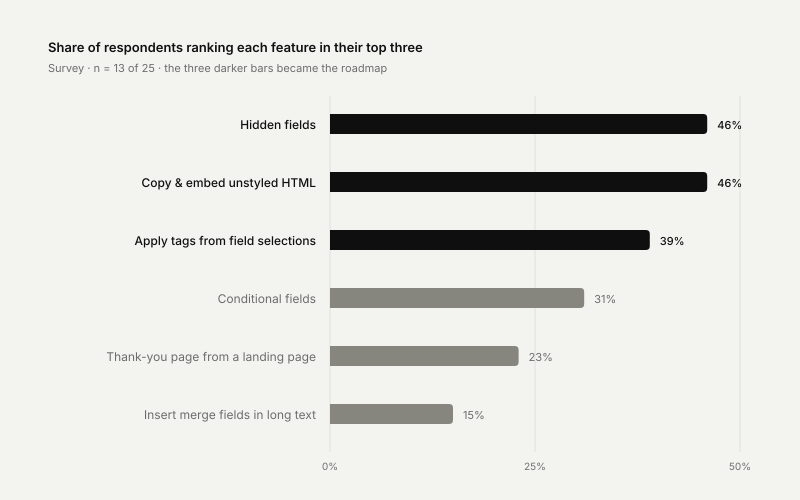
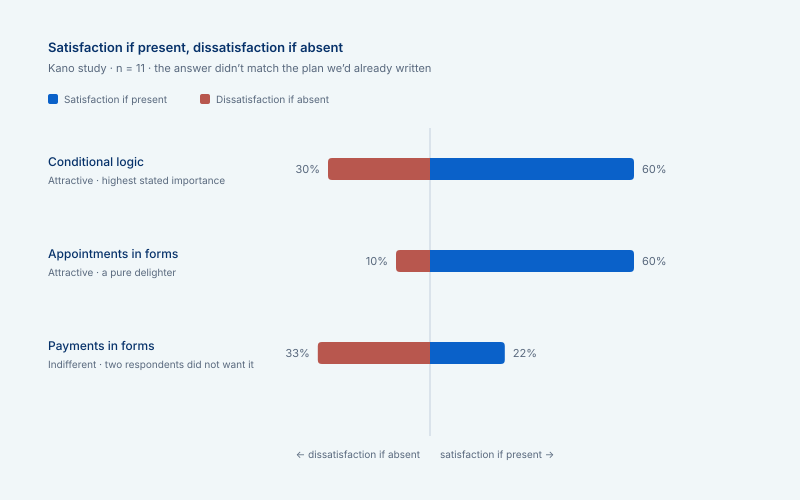
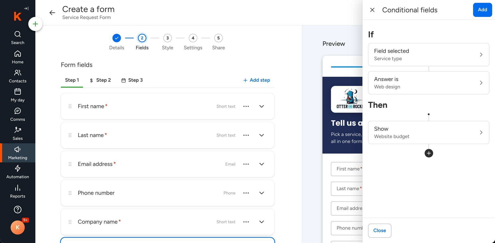

Merging seven form
builders into one
Keap had seven form builders that all did the same job, and no team owned the whole problem. I was the only designer on it. I did the research, designed the new builder, and used what I learned to change the roadmap.
Recorded from the interactive prototype, on demo data.
Seven ways to build a form, and users still left
There were four live form products and three legacy ones, each with its own UX. My team owned four of them, and three other teams owned one each. Any improvement had to be rebuilt for every builder, or it only reached one. No single team owned the whole problem, so I took it on.
Users couldn’t tell them apart
The names came from our product vocabulary, not theirs. It’s also why the legacy migration stalled. With three modern builders, there was no obvious one to move to.
So they built forms elsewhere
Our own survey turned up four other form tools people were using instead. A quarter of respondents named the same general purpose tool.
One form got worse
Before drawing anything, I pulled the measured score for every form. Only one hit its target, and the most used form scored lower after its rebuild than before.
The only designer on it
I took it from scoping and research through design, the pitch to leadership, and delivery.
Pulled six years of old research together
There were studies going back to 2020. Each one answered a single question and then sat in a folder, and nobody had put them side by side. Those five earlier studies are what let me argue the problem was structural and not just my opinion.
Ran new research
A survey of 25 people with two researchers, a competitor audit of nine platforms and a prioritization workshop. I also designed both usability studies.
Set the direction and the phases
Parity first, then consolidation, then appointments and payments. Checkout belonged to another team, so I had to get that team on board before I could design anything in their part of the product.
Argued against the full rebuild
Everyone assumed we’d rebuild, and engineering estimated that at twelve months or more. I showed that the data models were already sound and the fragmentation was in what users saw, so a rebuild would add regression risk without much payoff. Once I won that argument, it set the scope for everything after.

Ask what the form is for
Seven products became one builder with four use cases. The use case you pick also decides where the form is allowed to appear in the product.


Round one went badly, and that was useful
Round one · 7 participants
Everyone hit friction. None of the seven could figure out how to add a step, and six of seven got tripped up by the old categories. The live side by side preview was what people mentioned most when they talked about trusting it.
Round two · 8 participants
A year later, manual creation scored a perfect 3.00 on the same flow that had broken for everyone. Most people didn’t even notice the public/internal split was gone.
What still didn’t work
Nobody could find Forms. People looked in Automations, Contacts, Sales and Reporting first. The merge itself went unnoticed, which was good, but getting to Forms was still a problem.

One builder made AI drafts possible
Having one builder is also what made AI generation work. With seven builders, a model would have had seven targets, each with different features. With one, it can produce a complete form that uses everything the builder supports.
The fields, copy, brand and template all come in together, and switching templates changes the look without touching the fields. Recorded from the interactive prototype.


Testing showed that nearly everyone tries AI once, so the first result has to be good. I added suggestion chips and templates to the starting screen, so nobody starts from an empty prompt box.

Where I changed direction

A Kano study on the three candidate features didn’t match the plan we’d already written. Conditional logic wasn’t on the roadmap at all, even though it was the top complaint in the survey and the top ranked feature in the study. I took the results to leadership and got the roadmap changed: conditional logic moved up, and the payments phase came out.


What shipped and what’s next
One team can own the form service now, and the tech debt and upkeep of seven separate implementations goes away with it. Forms also work across every area of the platform instead of living inside one product, so people can use a form wherever they’re working. Getting there meant working across four teams, and the system now has AI and MCP layers on top. The migration took two months of design research and six months of development, and the research kept going through the build. It’s going well so far: 79% moved across seamlessly, support tickets are down, and the same issues aren’t coming back.
Not all of it has shipped yet. It’s going out in stages, and I ordered them by what users ranked highest, so the first ones out are the ones the research backed most.